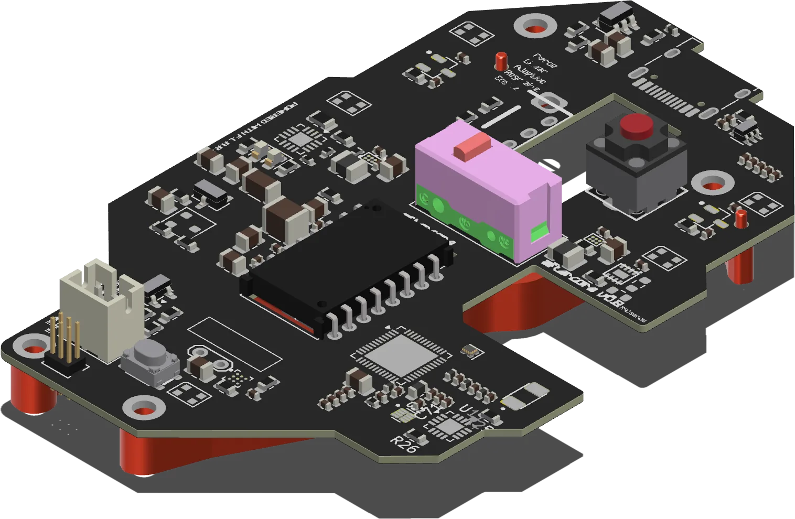
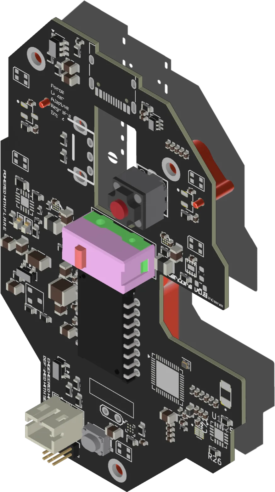
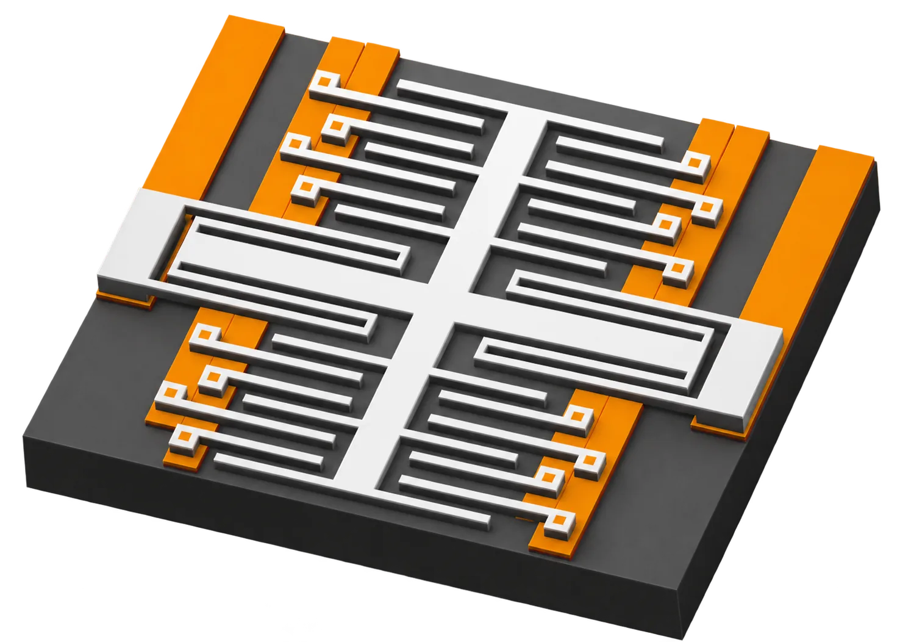

mechanical design
Shell geometry, internal structure and tolerance stacks modelled end-to-end, so a wall can be thinned where the data says it is safe.

aftercore // hardware lab
AfterCore is a non-seeded hardware startup building peripherals that weigh almost nothing and still feel indestructible. We own every layer of the part — CAD, PCB, materials selection and the prototyping loop — and the X40G runs a PAW 3950 sensor at 8 kHz polling, with FLARE reading every switch.
what we do
No hand-offs, no translation loss. The same people who sketch the shell also route the board and pick the alloy.
Shell geometry, internal structure and tolerance stacks modelled end-to-end, so a wall can be thinned where the data says it is safe.
Sensor, power and interconnect layout co-designed with the mechanical model — the PAW 3950 front-end and the FLARE sensing that reads every switch.
Magnesium alloy grades, wall thickness, joining method and finish chosen against measured stiffness, not datasheet optimism.
Printed, machined and tested in weeks. Every cycle ends in a part in the hand, not a rendering in a deck.
flagship
A magnesium-alloy shell around a board we designed ourselves. Forty grams without cutting the structure that keeps a mouse feeling solid — the stiffness comes from geometry and alloy, not from wishing.
Magnesium alloy, thin-wall geometry, stiffness tuned by simulation before metal is cut.
Force Linear Adaptive Regulable Engine — magnetic sensors act as the switches. No mechanical contacts to wear out, and the actuation point is read electrically.
In-house PCB routed to the shell — fewer brackets, fewer screws, fewer grams.
Design, build, measure, repeat — every revision ends in a part on the bench.

switches
FLARE — Force Linear Adaptive Regulable Engine. The X40G reads every switch magnetically: the sensor measures the field instead of closing a pair of contacts, so actuation is a value on the board rather than a mechanical event that wears out.

// next
Tell us the weight budget and the constraint that keeps breaking. We answer every serious message.
x40g // internals